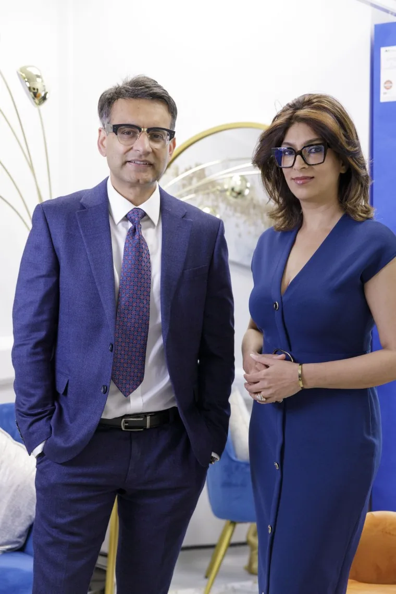
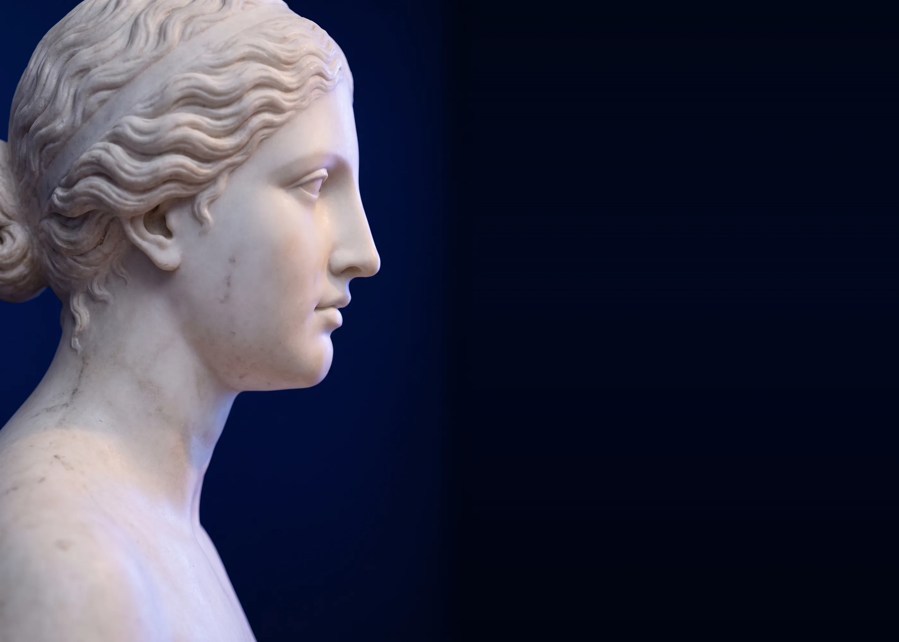
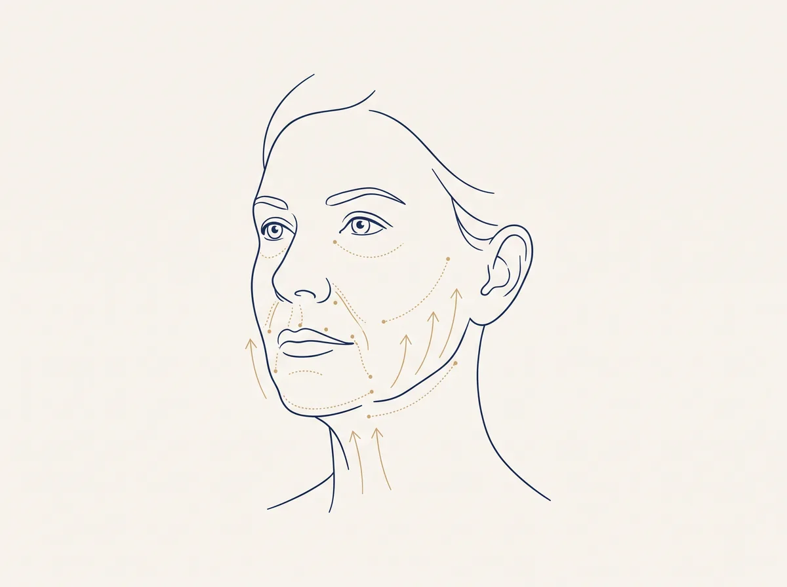
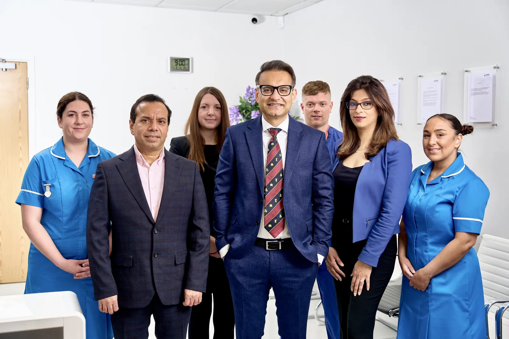
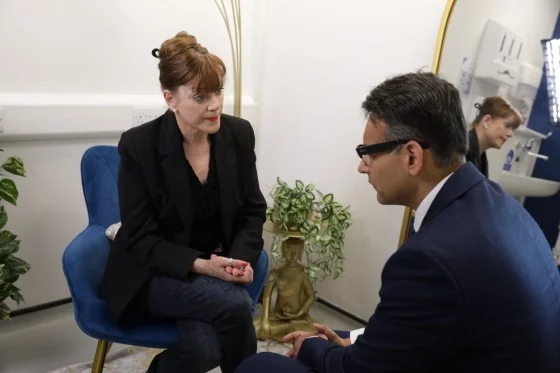
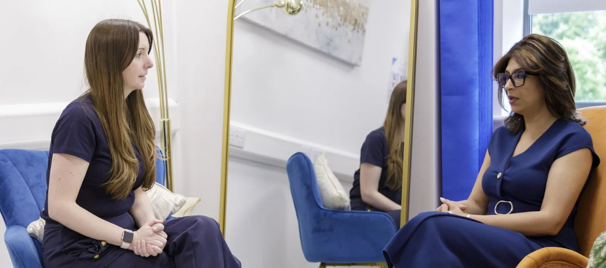
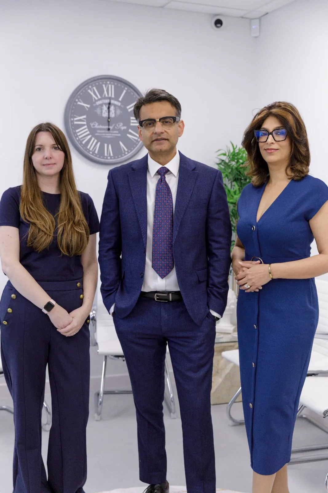

Look as young as you feel
A deep plane facelift restores a naturally lifted, refreshed face. Results that look like you, only rested.
- Natural-looking results that last the longest
- Smooth, lifted skin, never the "done" look
- Renewed confidence in every photo and mirror
- The chance to speak to a previous deep plane facelift patient
- Performed only by Mr Supriya, with consultations on Harley Street

Book your free discovery call with our patient coordinator
Pick a time that suits you. Holly, our patient coordinator, will call you, answer your questions and, if you'd like, arrange your consultation with Mr Supriya. No cost, no obligation.
Prefer to write to us? Send an enquiry · Or call 07590 817036
Told in their own words
Helping real people take years off their faces
Authentic, unedited before and after photographs of Mr Supriya's patients. Swipe through each patient to see every angle.


"The outcome is natural and elegant. I feel more confident and refreshed while still looking like myself."M.J., facial surgery patient
Still catching signs of ageing every time you look in the mirror?
Sagging skin, deep lines and jowls do not just change how you look, they change how you feel about yourself. You skip the photos. You avoid the gatherings. The face in the mirror stopped matching the person inside it.
You do not have to accept it. A naturally youthful, lifted appearance is closer than you think, and it begins with one phone call.

Reveal the real you
Performed by leading facial surgeon Mr Mrinal Supriya, the deep plane technique lifts the deeper layers of the face as one unit, restoring definition to the cheeks, jawline and neck with results that look natural, not "done".
- Lift sagging cheeks and the mid-face
- Smooth jowls and redefine the jawline
- Soften deep nasolabial folds
- Ease marionette lines
- Tighten loose neck skin and neck bands
- Restore youthful contours as one unit
- Natural results, never pulled or tight
- Results that outlast a traditional facelift

What to expect, in plain terms
- Surgery time
- 5 to 6 hoursWith a neck lift
- Anaesthesia
- General anaesthesia or twilight sedationWith a consultant anaesthetist
- Hospital stay
- Usually one nightDay case for more limited surgery
- Bandages
- Headband for 1 to 2 daysCompression garment for 1 week
- Recovery
- 2 to 3 weeksBefore normal social and work activities
- Exercise
- Gradually from 2 to 4 weeksStrenuous exercise after 3 to 4 weeks
- Results
- Clear improvement in the first few weeksFinal result at 12 to 18 months
- Cost
- From £18,000 all inclusiveConsultation £250
You may be a good candidate if
- You have jowls, a softer jawline or sagging cheeks
- You have loose skin around the face and neck that non-surgical treatments cannot improve
- You are typically in your 40s to 70s, or younger with laxity after significant weight loss
- You are in good health and a non-smoker, or able to stop around surgery
- You have realistic expectations and someone to look after you during recovery

How deep plane differs from a regular facelift
Most clinics offering a facelift do not carry out true deep plane surgery. Only a handful of UK surgeons divide the anchoring ligaments, the step that matters most for long-lasting, natural results.
A traditional facelift
The skin and the underlying SMAS layer are lifted separately, then tightened with sutures. This can give shorter-lasting, less natural results.
- How it works
- Skin and SMAS lifted separately and tightened
- The risk
- A pulled look and results that fade sooner
The deep plane technique
Skin and muscle are released and repositioned as a single unit, freeing the deep anchoring ligaments. The result is a more natural, far longer-lasting rejuvenation.
- How it works
- Deep ligaments released, tissues lifted as one unit
- The result
- Natural contours, with no tension on the skin
The BFC Triple Lock
Mr Supriya's preferred approach is a composite deep plane face and neck lift. After the deep tissues are released, three levels of deep fixation support the cheek, jowl and jawline, rather than relying on skin tension.
- Why it matters
- Better blood supply to the skin, which supports healing
- Tailored to you
- Extent of surgery matched to your anatomy and goals

Refreshed, never "done"
Completely natural
Tension-free repositioning means a refreshed face, never a pulled or operated look.
Lasts far longer
Releasing the deep ligaments gives results that outlast a traditional facelift by years.
A gentler recovery
A targeted technique means less swelling, less bruising and gentler healing.
Restored confidence
Smooths jowls, neck bands and deep folds, so you feel like yourself again.
The changes patients bring to us most

Sagging jowls
Loose skin and tissue that gather below the jawline and blur its outline.
Mid-face descent
Cheeks that have dropped over time, leaving the face looking flatter and more tired.
Nasolabial folds
Deepening lines running from the sides of the nose to the corners of the mouth.
Marionette lines
Lines from the corners of the mouth towards the chin that can make you look sad or stern.
A softening jawline
Loss of the crisp angle between the jaw and the neck.
Loose neck skin and bands
A "turkey neck" or visible neck bands, treated alongside the face with a neck lift.
Volume loss
Hollowing in the cheeks and temples, which can be restored with fat grafting at the same time.
We stay with you every step of your recovery
- Up to 18 months of follow-up care, with unlimited appointments
- A TCA skin peel when needed
- A post-operative recovery package to take home
- A dedicated team member you can contact at any time
- The chance to speak to a previous deep plane facelift patient
- Day of surgeryMost patients stay one night in hospital for comfort and observation
- 1 day afterReview with Mr Supriya to remove the bandage and check your wounds
- Days 1 to 14Compression garment worn as directed to support healing and reduce swelling
- Weeks 2 to 3Back to desk-based work, driving and social activities
- 4 to 6 weeksReview with Mr Supriya; most visible swelling has settled
- 12 monthsIn-clinic appointment with Mr Supriya to review your result
Mr Mrinal Supriya
"A good surgical result does not shout. I judge success by subtlety. My role is to protect identity, not to replace it."
A double fellowship trained Consultant ENT and Head and Neck Surgeon, Mr Supriya has dedicated his career to surgery of the face and neck. He founded British Face Clinic to focus solely on facial surgery, and he personally conducts every consultation, operation and follow-up.
Alongside private practice he remains an NHS consultant, having served as Divisional Director of Surgery and Clinical Director for Head and Neck Services at University Hospitals of Northamptonshire. He previously held consultant posts at St George's, London, and Ninewells Hospital, Dundee, trained in Melbourne and Michigan, and spent time with renowned facial plastic surgeon Dr Andrew Jacono.
Small clinic, senior surgeon, no hand-offs
Natural results, very few revisions
We aim for a face that looks rested, never "done". Our revision rate is exceptionally low.
Trained by the best
Mr Supriya spent time with Dr Andrew Jacono, one of the leading facelift surgeons in the USA.
International training
Experience from top hospitals in the UK, Australia and the USA.
True composite deep plane
Not skin or SMAS tightening: the extended approach that releases the anchoring ligaments.

The team who will look after youA teacher of surgeons
He trains Oxford Deanery surgeons, keeping his practice at the leading edge.
One named contact
Unlimited access to a nominated team member before, during and after surgery.

Start with a free 15-minute discovery call, then meet Mr Supriya
Your first step is a Free Discovery Call with Holly, our patient coordinator. If you would like to go further, you can meet Mr Supriya in person or online.

We will talk about
- Your goals and what you hope to see
- Medical conditions, allergies and treatments
- Medications, supplements, alcohol and smoking
- Any previous surgery
Mr Supriya will
- Assess your general health and any risk factors
- Take photographs
- Explain your surgical options and recommend a plan
- Talk through likely outcomes, risks and possible complications
You will also
- Preview possible results with digital imaging, where appropriate
- Receive a clear quote and payment options
One fixed fee, everything covered
No hidden costs, no separate invoices and no surprises after surgery. Every deep plane facelift is performed by Mr Supriya himself.
With or without fat grafting and liposuction. A fixed, all-inclusive fee covering your surgeon, anaesthetist, hospital stay and every follow-up appointment.
With neck lift, platysmaplasty and fat grafting. Rejuvenation of the face, jawline and neck in one procedure, for one fixed, all-inclusive fee.
Deductible from your surgery when you go ahead, with follow-up consultations included.
Interest-free monthly payments for 12 months.
- Fast approval
- No hidden fees
- A response in minutes
Surgeon's fee
Your surgery and all post-operative follow-up appointments. In the unlikely event of an emergency or complication, further surgical care is included too.
Anaesthetist's fee
A consultant-led anaesthetic team, included in your total package price.
Theatre and hospital stay
Your private hospital stay and the medication you take home on discharge.
Aftercare
Up to 18 months of follow-up care, unlimited appointments and a TCA skin peel when needed.
The questions everyone asks
Something we have not covered? Call us on 07590 817036.
Is a deep plane facelift suitable for all age groups?
It is typically recommended for people in their 40s to 60s with moderate to significant sagging in the mid-face, jowls or neck. Age matters less than your overall health, skin condition and goals, and younger patients with significant laxity, for example after weight loss, can also be suitable.
How is a deep plane facelift different from a traditional facelift?
A traditional facelift lifts the skin and the SMAS layer separately and tightens them with sutures. A deep plane facelift releases the deep anchoring ligaments and repositions skin and muscle as one unit, for a more natural, longer-lasting result.
How long do the results last?
The results are long-lasting, often giving a rejuvenated appearance for many years. How long they last depends on your skin type, lifestyle and natural ageing. Mr Supriya will explain what is realistic for your face at your consultation.
What are the signs that I might be a good candidate?
Sagging skin in the mid-face, pronounced nasolabial folds, jowls and loose neck skin. Good candidates are in good health, non-smokers and have realistic expectations about the outcome.
Can a deep plane facelift be combined with other procedures?
Yes. Many patients choose a comprehensive face and neck rejuvenation, combining a forehead lift, eyelid surgery, facelift, neck lift and lip lift in one session. Where appropriate, this gives the best outcome and means only one recovery.
What type of anaesthesia is used?
A deep plane facelift is performed under general anaesthesia or twilight sedation, with a consultant anaesthetist looking after you, so you are comfortable and pain-free throughout.
Will I still look like myself, with natural expressions?
Yes. Because the technique repositions the deeper tissues rather than pulling the skin, most patients keep their normal facial movement and expressions, and the result looks natural rather than tight.
Will a deep plane facelift help my neck?
Yes, it can improve sagging and laxity in the neck. For more pronounced neck concerns, a neck lift can be combined with the facelift for the best result.
How is scarring kept to a minimum?
Incisions are placed along the hairline and around the ears, where they are easy to hide. They are closed with fine sutures, and you will receive aftercare instructions to help them heal as well as possible.
Are there any risks?
As with any surgery, there are risks, including bleeding, infection, nerve injury and reactions to anaesthesia. Complications are rare with an experienced surgeon, and Mr Supriya will talk you through every risk in detail at your consultation.
Four places to see us
Rather write to us? Send us a message
Tell us a little about you and Holly will get back to you, usually within one working day.
